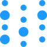
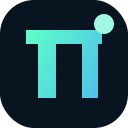
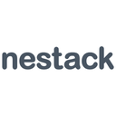

Eval and benchmark tools for monitoring agents in production
Evaluation tools that score agent outputs, catch regressions and compare prompts and models. Of the 113 tools on our monitoring agents in production page, 19 fit this narrower job. By pricing: 7 open source, 1 source-available, 8 free or freemium, 2 paid, usage-based or enterprise, 1 pricing on the maker's site. The most-starred open repos here are Langfuse (36,753 stars), MLflow (28,599 stars), Opik (23,035 stars). Most come from the evals & observability (15), MCP servers (2), agent infra (1) categories.
Updated
On this page
Langfuse
Open-source LLM observability, tracing and evals.
Added
MLflow
Open-source platform for tracing, evaluating and managing agents, LLM apps and ML models.
Added
Opik
Comet's open-source platform for tracing, evaluating and monitoring LLM apps, RAG systems and agent workflows, self-hosted or in the cloud.
Added
Arize Phoenix
Open-source tracing and evaluation for LLM apps.
Added
Inngest
Inngest is a durable workflow orchestration platform for running stateful step functions and AI workflows on serverless, servers or the edge. You write functions in TypeScript, Python or Go with automatic retries, queues, throttling and human-in-the-loop waits, and its AgentKit and AI inference steps let you build durable, long-running AI agents with tracing and evals. The server is source-available (SSPL, converting to Apache 2.0 later) and can be self-hosted, or you can use Inngest Cloud.
Added
Solace Agent Mesh
Platform for building and running AI agents across the full lifecycle — build, test, deploy, monitor, improve. Hosts your agents, runs their tools, and coordinates them over an event mesh, with sessions, artifacts, auth, evaluators, and observability built in.
Added
Agenta
Open-source LLMOps platform for prompt management, evaluation and observability.
Added
Future AGI
Open-source platform for evaluating, tracing, simulating and guarding LLM and AI agent applications, self-hostable or cloud.
Added
OpenAPPA
OpenAPPA is a deterministic guardrail that sits between an AI agent and its tools and tracks how data flows across tool calls, instead of asking a second model to judge each call. Policies decide whether untrusted or sensitive data may reach a given action, which blocks data exfiltration caused by prompt injection or hallucination while letting agents finish their tasks. It plugs into Claude Code, Pi, OpenCode, kAgent and Archestra, comes with reusable policy "batteries", validation, observability and reporting, and is backed by a NeurIPS workshop paper with published benchmarks. It is in preview as an open RFC.
Added

W&B Weave
Weights & Biases toolkit for tracing and evaluating agents.
Added

Pi Harness
The operational superset of Pi Coding Agent — everything Pi, plus observability, governance, recovery, evaluation and multi-agent orchestration. Pi Coding Agent 的运维超集——完整继承 Pi 的核心能力，并进一步扩展可观测性、治理、故障恢复、评估和多 Agent 编排。
Added
LangSmith
Tracing, evals and monitoring for LLM apps and agents.
Added
Arize AI
Agent observability and evaluation platform with tracing, evals and experiments for improving AI agents.
Added
Braintrust
Evals and observability platform for AI products.
Added
Confident AI
Enterprise platform for AI evals and observability that gives teams one standard for measuring and monitoring AI quality.
Added
Kore.ai Autoloop
Optimization engine in Kore.ai Agent Platform Artemis that evaluates agents against business goals, diagnoses failures from traces, applies targeted fixes, and re-verifies; GA Oct 2026.
Added

Nestack Agent Care
Nestack Agent Care is a managed operations service for production AI agents, covering monitoring, evals, guardrails, human review, incident response and cost and drift control.
Added
Openlayer MCP
Openlayer's MCP server, letting coding agents pull evaluation results, failing tests and monitoring data from Openlayer so they can debug and improve AI systems from the IDE.
Added
Respan
Observability and evaluation platform for LLM apps and agents.
Added
GitHub repos (12)
| Repo | GitHub stars | Licence | Last push |
|---|---|---|---|
| Langfuse ↗ | 36,753 | MIT, except the ee/ directories (commercial licence) | 2026-10-30 |
| MLflow ↗ | 28,599 | Apache License 2.0 | 2026-10-30 |
| Opik ↗ | 23,035 | Apache License 2.0 | 2026-10-30 |
| Arize Phoenix ↗ | 12,074 | Elastic License 2.0 (source-available) | 2026-10-30 |
| 6,003 | — | 2026-10-29 | |
| 4,924 | — | — | |
| Agenta ↗ | 4,876 | MIT License, except ee/ directories (separate licence) | 2026-10-30 |
| Future AGI ↗ | 2,227 | Apache 2.0 | 2026-10-28 |
| OpenAPPA ↗ | 1,617 | — | 2026-10-29 |
| W&B Weave ↗ | 1,145 | Apache License 2.0 | 2026-10-23 |
| Pi Harness ↗ | 375 | — | — |
| LangSmith ↗ | 20 | MIT | 2026-10-30 |
12 repos. Stars and licence come from each repo, checked when the listing was last verified.
FAQ
What are the best AI tools for monitoring agents in production focused on evals and benchmarks?
We list 19. The first three by GitHub stars and featured status are Langfuse: Open-source LLM observability, tracing and evals.; MLflow: Open-source platform for tracing, evaluating and managing agents, LLM apps and ML models.; Opik: Comet's open-source platform for tracing, evaluating and monitoring LLM apps, RAG systems and agent workflows, self-hosted or in the cloud.
Are there free or open-source options?
Yes: 7 open source, 1 source-available, 8 free or freemium, 2 paid, usage-based or enterprise, 1 pricing on the maker's site. Pricing is as each maker states it.
More from monitoring agents in production
Tools are grouped by what each says it does. Missing one? Submit it free.